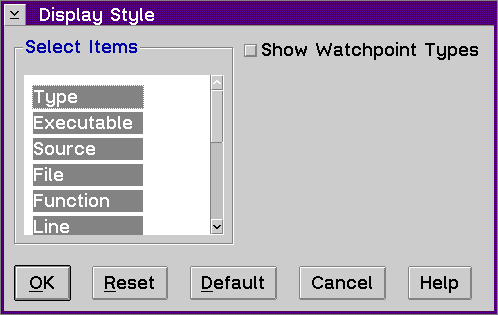

Displays the Display Style window, which allows you to control how the items appear in the Breakpoints List window.
To change the columns which are displayed in the Breakpoint List window:
The Show Watchpoint Types check box allows you to see more type information for watchpoints when they are enabled. For example, a type field of Watch - Instruction fetch would be displayed.